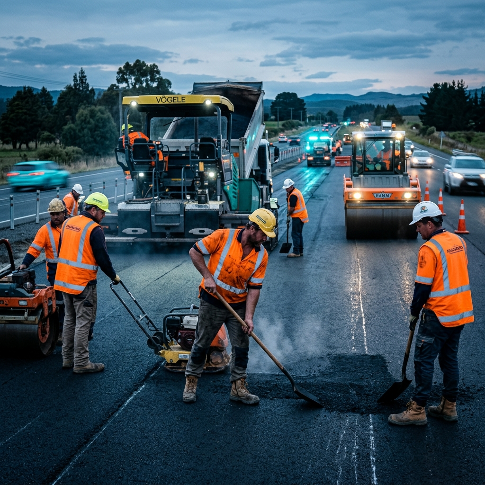
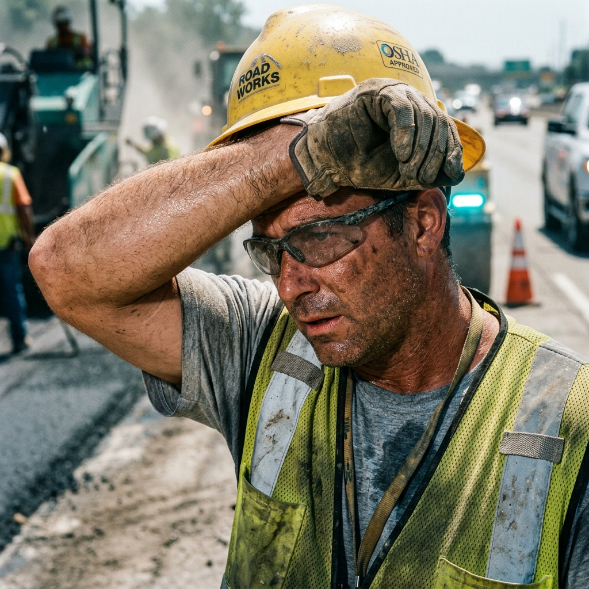
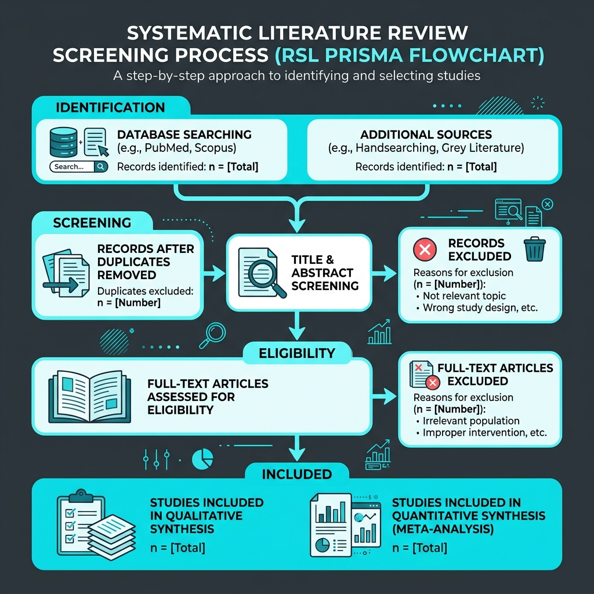
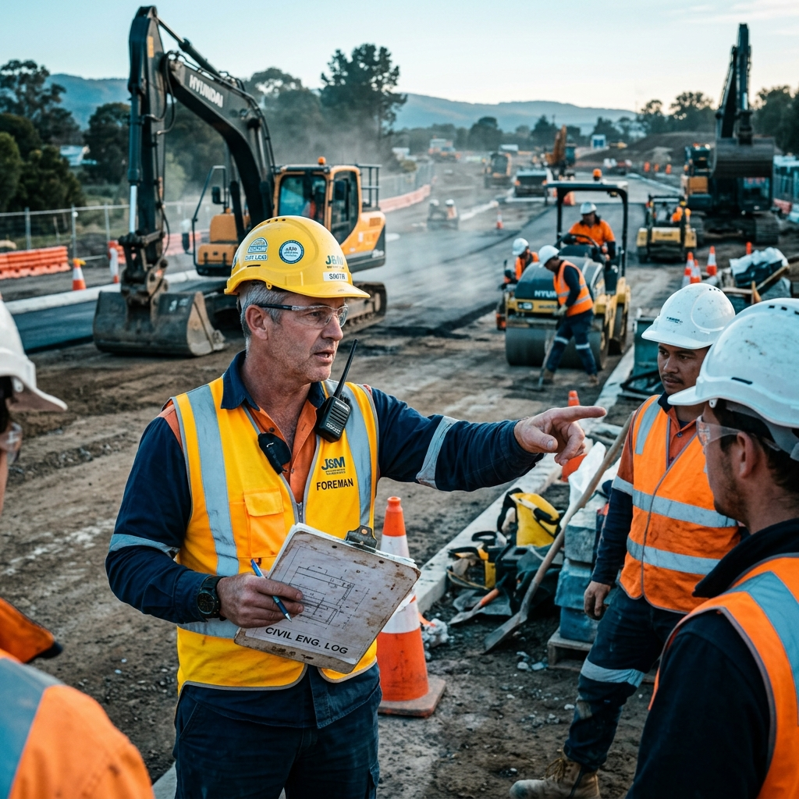

Revisión Sistemática de la Literatura Académica Reciente (2022-2026)

Las obras de pistas y veredas representan un sector de alto riesgo por la presencia constante de maquinaria pesada, ruido excesivo de motores y la exposición a radiación solar intensa que desgasta al operario.
Existe una discrepancia profunda entre lo planteado en los documentos formales de seguridad (como los planes exigidos por la Ley 29783) y el comportamiento preventivo real de los obreros en las calles, comúnmente motivado por el apuro y la falta de control.

Pregunta General: ¿De qué manera está impactando la gestión de SST sobre el nivel de riesgo en proyectos viales según la literatura científica reciente?
La estabilidad de las familias de los obreros depende directamente de su integridad física en campo. Lograr un sistema de gestión robusto garantiza el retorno seguro de los operarios.
Aporta a las constructoras un marco de referencia científico de lo que funciona y lo que falla, disminuyendo fallas operativas y paralización de tramos por accidentes graves.
Brinda un análisis crítico sobre la discrepancia sistémica de la Ley 29783 en el pavimento real, sirviendo como guía de auditoría para futuras obras de pavimentación vial.
El capataz que promueve la comunicación horizontal modula de forma positiva la conciencia segura de los obreros. Por contra, el liderazgo transaccional o netamente punitivo fomenta el miedo y genera el ocultamiento sistemático de incidentes.
La presión del cronograma y la supervisión agresiva desencadenan fatiga emocional y agotamiento mental, lo que bloquea la concentración del obrero e induce errores operativos graves.
La fatiga del obrero se asocia directamente a errores manuales. Se puede medir y clasificar objetivamente mediante técnicas de variabilidad de la frecuencia cardíaca, lo que evidencia el desgaste muscular real en campo.
Las posturas forzadas y la manipulación manual incorrecta de materiales pesados (cemento, adoquines) son los principales determinantes de dolencias de la columna lumbar en obreros viales.
Investigación de **tipo básica**, con enfoque **cualitativo-documental** y diseño descriptivo no experimental. Se estructuró como una **Revisión Sistemática de la Literatura (RSL)** rigurosa, siguiendo los principios de la declaración **PRISMA**.
1. Nivel de Riesgo Laboral: Evaluado mediante subcategorías de factores físicos (ruido, caídas), ergonómicos (cargas, posturas) y psicosociales (estrés, fatiga mental).
2. Gestión de SST: Evaluada mediante el liderazgo preventivo del jefe, capacidades regulatorias del marco legal y cumplimiento real en campo.

Inclusión: Artículos científicos de revistas indexadas en Scopus y Web of Science (Q1/Q2) publicados entre **2022 y 2026** enfocados en construcción vial, liderazgo, estrés y prevención tecnológica.
Exclusión: Tesis universitarias, artículos de opinión, conferencias no indexadas y estudios no relacionados a obras civiles públicas.
**Técnica:** Fichaje y revisión sistemática de bases de datos académicas.
**Instrumento:** Matriz de síntesis y extracción en Excel, parametrizando: autor, año, metodología, objetivos y hallazgos vinculados a SST.
**Análisis:** Análisis de contenido temático agrupando tendencias y brechas.
| Riesgo Sistémico Detectado | Impacto | Consecuencia Operativa | Referencia / Cita |
|---|---|---|---|
| Falta de capacitación técnica | alto | Incremento de accidentes laborales | Liu et al. (2026) |
| Supervisión deficiente en campo | alto | Aparición de riesgos operativos graves | Liu et al. (2026) |
| Mala comunicación interna | medio | Errores críticos de coordinación en obra | Liu et al. (2026) |
| Presión de cronograma/avance | alto | Conductas inseguras y omisión de EPP | Liu et al. (2026) |
**Castro Mejía et al. (2023)** reportan la percepción de riesgos en obra:
| Tipo de Fatiga | Conducta Insegura Asociada | Impacto Fisiológico | Referencia / Cita |
|---|---|---|---|
| Fatiga Física | Errores en operaciones y manipulación manual | Cardiovascular/Muscular (VFC) | Fang et al. (2023) |
| Fatiga Mental | Distracción constante y olvido de EPP | Agotamiento mental por presión | Fang et al. (2023) |
| Fatiga Mixta | Incidentes y accidentes graves en el pavimento | Alta propensión al error humano | Fang et al. (2023) |
| Riesgo Ergonómico en Pavimentación | Lesión o Trastorno Frecuente | Severidad | Referencia / Cita |
|---|---|---|---|
| Posturas forzadas / inclinaciones | Dolor lumbar y deformaciones en columna | Alto / Ocupacional | Seo & Lee (2026) |
| Manipulación manual de cargas | Lesiones musculares, desgarros y esguinces | Moderado / Agudo | Riana et al. (2024) |
| Movimientos repetitivos (paleteo) | Fatiga muscular generalizada y tendinitis | Medio / Crónico | Seo & Lee (2026) |
| Tipo de Liderazgo del Capataz | Resultado en Comportamiento Seguro | Referencia / Cita |
|---|---|---|
| Liderazgo Transformacional | Mayor prevención, reporte de riesgos y cumplimiento de SST | Sankar & Anandh (2024) |
| Liderazgo Transaccional | Cumplimiento parcial (solo por incentivos o recompensas) | Sankar & Anandh (2024) |
| Liderazgo Punitivo / Autoritario | Ocultamiento sistemático de errores y accidentes menores | Samuelsson et al. (2026) |
| Liderazgo Pasivo / Laissez-faire | Baja supervisión e incremento grave de la accidentabilidad | Sari et al. (2023) |

| Estresor Laboral en Construcción | Impacto Emocional y Psicológico | Consecuencia de Seguridad | Referencia / Cita |
|---|---|---|---|
| Presión extrema de tiempo | Estrés elevado, fatiga mental y sobrecarga | Descuidos por apuro | Zhang et al. (2023) |
| Supervisión abusiva o autoritaria | Ansiedad laboral y distracción cognitiva | Conductas inseguras | Wang et al. (2023) |
| Jornadas laborales extensas | Depresión ocupacional y fatiga mental | Disminución de reflejos | Zhang et al. (2023) |
| Barrera Organizacional Detectada | Efecto Perjudicial en Obra Vial | Referencia / Cita |
|---|---|---|
| Presupuesto de seguridad insuficiente | Falta de EPP homologados y recorte de capacitaciones | Irfan et al. (2026) |
| Leyes e inspección débiles en campo | Bajo control preventivo, nulo cumplimiento de la ley | Hussain et al. (2026) |
| Presión laboral / avances rápidos | Fomento de conductas inseguras e infracciones deliberadas | Afuye et al. (2024) |
| Falta de coordinación sistémica | Errores operativos graves en la secuencia de obra | Liu et al. (2026) |
El cansancio físico originado por las posturas forzadas y el sobreesfuerzo de carga se acopla con la fatiga mental por estrés térmico y ruido ambiental. Esto propicia actos inseguros recurrentes en la pavimentación vial.
El estilo transformacional del capataz ejerce un impacto preventivo crítico sobre las conductas seguras. Promover la confianza en lugar del castigo mejora el clima de seguridad y reduce los incidentes ocultos.
La prevención real en campo se ve mermada por limitaciones presupuestarias de las constructoras y una nula fiscalización periódica estatal, limitando la Ley 29783 a un mero cumplimiento burocrático en oficina.
Implementar pausas activas obligatorias y rotación de puestos en tareas de pavimentación manual para mitigar lesiones musculoesqueléticas de columna lumbar y reducir la fatiga cardiovascular acumulada.
Capacitar a residentes, ingenieros y capataces en habilidades transformacionales, promoviendo una cultura de reporte activo libre de castigos y gestionando el estrés para evitar descuidos por apuro.
Blindar una partida presupuestaria fija y exclusiva para seguridad laboral desde las bases de licitación, impidiendo recortes en prevención para priorizar el cronograma físico de producción.
¿Preguntas o comentarios?
Gestión de Seguridad y Salud Ocupacional y Nivel de Riesgo Laboral en Obras Viales: Revisión Sistemática